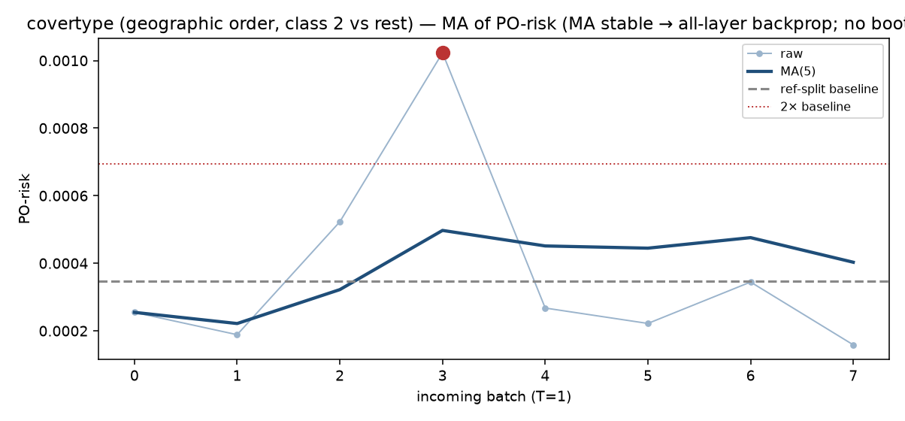
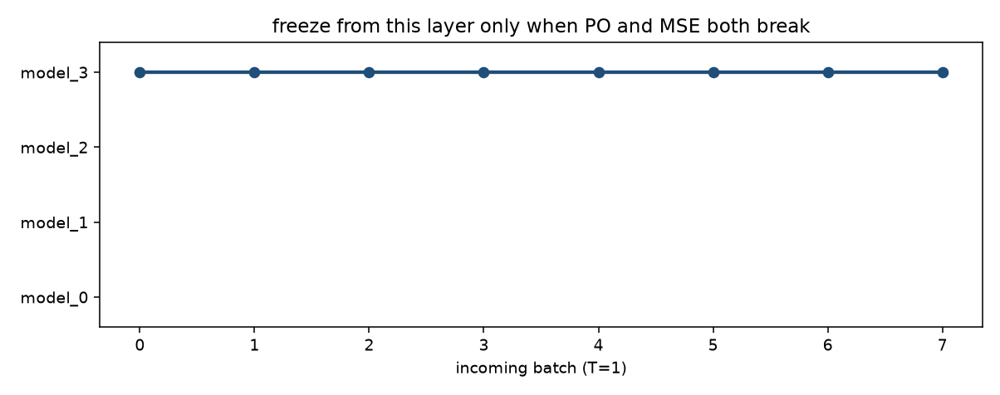
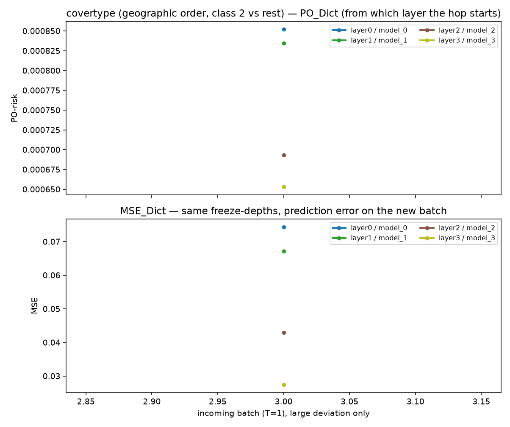
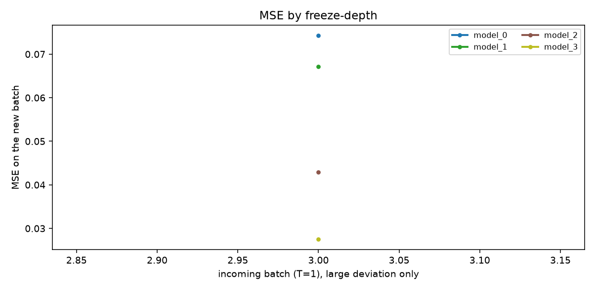

covertype (geographic order, class 2 vs rest). n_ref=10000, n_new=10000, hidden=[64, 32].
表格 PO-risk 单独维护 outcome model μ(Y|X) 和 propensity e(T|X)。
新 batch 是 T=1。raw PO-risk 会抖就做 causal moving average；
MA 稳（不过 2× baseline）→ 全量每一层 back-propagate。
大 hop 上同时记 PO_Dict / MSE_Dict
（layer0…layer_k），从哪一层开始明显变动就对着 MSE 读。
不做 online-bootstrap。何时 update 是业务逻辑，不是这个数。
MA 稳定 → 全量每一层 back-propagate




| t | PO-risk | MA | baseline | large? | action |
|---|---|---|---|---|---|
| 0 | 0.0002547 | 0.0002547 | 0.0003472 | all trainable | |
| 1 | 0.0001885 | 0.0002216 | 0.0003472 | all trainable | |
| 2 | 0.0005227 | 0.000322 | 0.0003472 | all trainable | |
| 3 | 0.001023 | 0.0004972 | 0.0003472 | yes | all trainable |
| 4 | 0.0002675 | 0.0004512 | 0.0003472 | all trainable | |
| 5 | 0.0002218 | 0.0004447 | 0.0003472 | all trainable | |
| 6 | 0.0003444 | 0.0004758 | 0.0003472 | all trainable | |
| 7 | 0.0001586 | 0.000403 | 0.0003472 | all trainable |
| layer | model | PO-risk | MSE |
|---|---|---|---|
| layer0 | model_0 | 0.0008518 | 0.07433 |
| layer1 | model_1 | 0.0008342 | 0.06711 |
| layer2 | model_2 | 0.000693 | 0.0429 |
| layer3 | model_3 ★ | 0.000653 | 0.02748 |